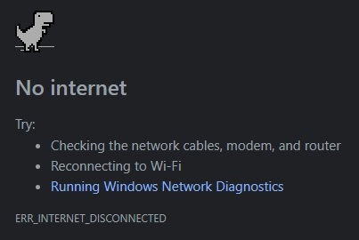

Caching Assets
Using Service Workers in JavaScript
By Christopher Robison
October 15, 2023

We've all been there. You're on your computer, online taking care of business. You're just wrapping up the final part of a 6-part online job application form and you're feeling good about this one. You click submit. The page shows a spinner as you stare blankly at the screen, waiting patiently until...BAM! You are presented with the dreaded Network not available
screen and all your hard work has now been lost to the ether. Sure, browsers have gotten better at recovering from these types of scenarios but if we expect users to use and actually rely on our web-based applications, it is imperative that we write software that will work no matter what, offline or online.
Until recently, there was little that could be done within the browser to address the loss of connectivity. There was no way to intercept network requests nor any client-side mechanism exposed for offline asset caching. But that has all changed. Now we have Service Workers. They're perfect for asset caching, which can not only dramatically speed up your web apps, but can also make them available offline. But don't confuse Service Workers with Web Workers; They are very similar but have one key diff erence: Service Workers are persistent while Web Workers are not. That means anything done in a Service Worker will continue to execute, even af ter the page has unloaded while anything done within a Web Worker is removed when the page is closed.
tl;dr: A service worker functions like a proxy server, allowing you to modify requests and responses replacing them with items from its own cache. In this post, I’ll walk through setting up a service worker for caching assets and explore using a couple of different caching strategies.
Setup: Registering a Service Worker
Before we dive into caching, we’ll need to register a service worker. Service Workers must be served over HTTPS as they are restricted to secure domains.
If you don’t have a secure domain you can use,
localhostis usually considered a secure origin by most browsers for local development.
Save the following code in a file called sw.js.
self.addEventListener('install', (event) => {
// Your install logic here
});
self.addEventListener('fetch', (event) => {
// Your fetch logic here
});This next part is our entry point into using service workers. Include this code in your main JavaScript file (app.js) to register the service worker:
const registerServiceWorker = async () => {
if ("serviceWorker" in navigator) {
try {
const registration = await navigator.serviceWorker.register("/sw.js", {
scope: "/",
});
if (registration.installing) {
console.log("Service worker installing");
} else if (registration.waiting) {
console.log("Service worker installed");
} else if (registration.active) {
console.log("Service worker active");
}
} catch (error) {
console.error(`Registration failed with ${error}`);
}
}
};
// …
registerServiceWorker();
- The if-block performs a feature detection test to make sure service workers are supported before trying to register one.
- Then ServiceWorkerContainer.register() function is called to register the service worker for this site. The service worker code is in a JavaScript file residing inside our app
Remember, that this code is run as a service worker, which runs in a worker context, and therefore has no DOM access.
Note: By using service worker feature detection, browsers that do not support service workers will continue to work normally, they just won’t work offline.
Fill your cache: install & activate:
After the service worker is registered, the browser will attempt to install and then activate the service worker for your app.
The install event is fired when an service worker installation is successfully completed. The install event is where you pre-fetch the assets you need to run your app offline and store them for later use. We use the Service Worker’s storage API, aptly named cache, which is basically a non-blocking persistent version of localStorage where we store our pre-fetched assets keyed by their request URL. The contents of the cache are kept until they are cleared or overwritten.
Here’s how a service worker handles the install event:
const addResourcesToCache = async (resources) => {
const cache = await caches.open("v1");
await cache.addAll(resources);
};
self.addEventListener("install", (event) => {
event.waitUntil(
addResourcesToCache([
"/",
"/index.html",
"/style.css",
"/app.js",
"/data.json",
"/img/logo.jpg",
"/img/image1.jpg",
"/img/image2.jpg"
]),
);
});
- First we add an
installevent listener to the service worker (hence self), and then chain a ExtendableEvent.waitUntil() method onto the event. This creates a promise that ensures that the service worker will not install until the code inside waitUntil() has completed. - Inside addResourcesToCache() we use the caches.open() method to create a new cache called v1, which will be version 1 of our site resources cache. Then we call a function addAll() on the created cache with an array of URLs to cache.
- If the promise is rejected, the installation fails, and the worker won’t do anything. This is OK, as you can fix your code and then try again the next time registration occurs.
- After a successful installation, the service worker activates.
Custom responses to requests
With our assets now cached, we need to instruct our service workers on how to serve our cached content. This is done within the fetch event.
- A fetch event fires every time any resource controlled by a service worker is requested, which includes the documents inside the specified scope, and any resources referenced in those documents (for example if index.html makes a cross-origin request to embed an image, that still goes through its service worker.)
- Add an event listener for the
fetchevent to the service worker, then call therespondWith()method on the event to hijack the HTTP requests and respond with our cached content.
self.addEventListener("fetch", (event) => {
event.respondWith(caches.match(event.request));
});
caches.match(event.request) allows us to match each resource requested from the network with the equivalent resource available in the cache, if there is a matching one available. The matching is done via URL and various headers, just like with normal HTTP requests.
Failed Requests
caches.match(event.request) works great when it matches something in the service worker cache, but what about when there isn’t? As our code currently stands, there is no failure handling so our promise would end up resolving with undefined and we wouldn’t get anything returned.
Let’s add some code that first tries the cache and falls back to a regular network request:
const cacheFirst = async (request) => {
const responseFromCache = await caches.match(request);
if (responseFromCache) {
return responseFromCache;
}
return fetch(request);
};
self.addEventListener("fetch", (event) => {
event.respondWith(cacheFirst(event.request));
});
If the resources aren’t in the cache, they are requested from the network. This is usually referred to as the cache-then-network
strategy. But we can do better.
By adding a few extra lines of code, we can not only request the un-cached resources from the network but we can also store them in our cache for later. This allows your app to consistently work offline, even when new resources are requested:
const putInCache = async (request, response) => {
const cache = await caches.open("v1");
await cache.put(request, response);
};
const cacheFirst = async (request) => {
const responseFromCache = await caches.match(request);
if (responseFromCache) {
return responseFromCache;
}
const responseFromNetwork = await fetch(request);
putInCache(request, responseFromNetwork.clone());
return responseFromNetwork;
};
self.addEventListener("fetch", (event) => {
event.respondWith(cacheFirst(event.request));
});The only trouble we have now is that if the request doesn’t match anything in the cache, and the network is not available, our request will still fail. Let’s provide a default fallback so that whatever happens, the user will at least get something:
const putInCache = async (request, response) => {
const cache = await caches.open("v1");
await cache.put(request, response);
};
const cacheFirst = async ({ request, fallbackUrl }) => {
// First try to get the resource from the cache
const responseFromCache = await caches.match(request);
if (responseFromCache) {
return responseFromCache;
}
// Next try to get the resource from the network
try {
const responseFromNetwork = await fetch(request);
// response cloned because responses can only be read once
putInCache(request, responseFromNetwork.clone());
return responseFromNetwork;
} catch (error) {
const fallbackResponse = await caches.match(fallbackUrl);
if (fallbackResponse) {
return fallbackResponse;
}
// when even the fallback response is not available,
// there is nothing we can do, but we must always
// return a Response object. Let's return a nice message
return new Response("External resource unavailable", {
status: 408,
headers: { "Content-Type": "text/plain" },
});
}
};
self.addEventListener("fetch", (event) => {
event.respondWith(
cacheFirst({
request: event.request,
fallbackUrl: "/img/image1.jpg",
}),
);
});Service worker updates
If there is an updated version of a previously installed service worker, the newer version will be available on page refresh/reload. It is installed in the background but will not be activated yet. It is only activated when there are no longer any pages loaded that are still using the old service worker. As soon as nothing is using the old service worker, the new service worker will be activated.
You will need to update your install event listener in the new service worker with a new version number:
const addResourcesToCache = async (resources) => {
const cache = await caches.open("v2");
await cache.addAll(resources);
};
self.addEventListener("install", (event) => {
event.waitUntil(
addResourcesToCache([
"/",
"/index.html",
"/style.css",
"/app.js",
"/image-list.js",
// …
// include other new resources for the new version…
]),
);
});
Removing stale content
When a service worker is updated to a new version, a new cache is created in the install event handler. If there are open pages that are using the previous version of the worker, both caches must be kept. You can use the activate event to remove data from the previous caches.
Promises passed into waitUntil() will block other events until completion, so the clean-up operation is guaranteed to have completed by the time the first fetch event on the new service worker fires.
const deleteCache = async (key) => {
await caches.delete(key);
};
const deleteOldCaches = async () => {
const cacheKeepList = ["v2"];
const keyList = await caches.keys();
const cachesToDelete = keyList.filter((key) => !cacheKeepList.includes(key));
await Promise.all(cachesToDelete.map(deleteCache));
};
self.addEventListener("activate", (event) => {
event.waitUntil(deleteOldCaches());
});